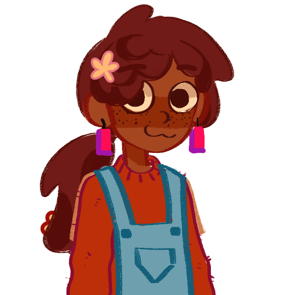

AGQ: Level 1
The Amazing Grace Quiz
Level 1:
EASY QUESTIONS
1. Who's Grace's favorite music artist? (more than one)
PARTYNEXTDOOR
Katseye
Mitski
Tems
Ariana Grande
2. Grace's favorite show of all time?
One Tree Hill
Grey's Anatomy
Breaking Bad
Gilmore Girls
3. What is Grace's number 1 anime?
Banana Fish
Attack on Titan
Haikyuu
4. What is NOT Grace's favorite meal?
Swallow
Jollof Rice
French Fries
Alfredo Pasta
Check Answers
